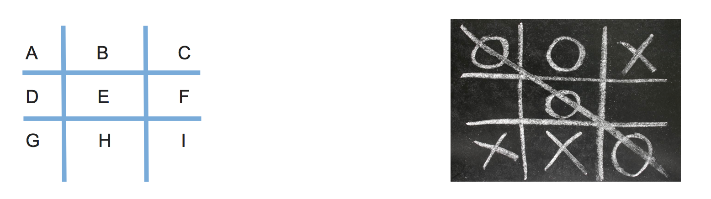

SRD 2018
1 SRD Work - 2018
Year 7 - Computing
- You've been using html and css to build your own web-pages.
- There are many free online resources to help you hone your html and css skills to build your ultimate website.
- For your SRD work:
- go to this site
- Sign up using your school email address and a new password
- You may be asked to verify your account. If so, please use this link BGS Webmail to log into your school email account.
- Spend an hour on the
Make a Websitecourse by following the instructions. - Take a screenshot of your final stage of your progress with the course and upload to bournetolearn.
- Please note, the instructions and help notes are on the left side of the window.
- Alternatively, if you do not have access to the link above:
- Sketch a design of your webpage on paper
- Write down on each area what you plan to put, for example, paragraph, image, bulletin point, hyper links etc.
- List all tags you know that you will be using in your design and explain what the purpose of each tag.
- Hand in your work in person or take a screenshot upload to www.bournetolearn.com
Year 8 - Computing
- How do we create Artificial Intelligence for Computer Games? Let’s investigate and find out by looking at the simple game of Naught’s Crosses.
- What is the secret of winning at naught and crosses? Research what are the winning strategies.
- Using structured English write down the steps you would follow to win at naught and crosses. Try and include the winning strategy you have researched.

- Example (structured English).
If the middle is empty, then
choose the middle (space E)
Else if any of the corners are available, then
Randomly choose a corner
Else if the corners are taken then...
- Extension tasks
- Now for a bonus achievement point write down your strategy using Pseudo Code, or python for the real ambitious.
- Let’s assume we need to have 9 variables, one to represent each of the 9 places (letters A to I, see the image above) that we can write either a “0” or a “X” into. These can store the following values; 0 = naught, 1 = crosses, 2 = blank.
Psuedo Code Example 1
Player = 0 (set 0 for player 1, set 1 for Player 2)
If E = 2 then E = Player
Else If A = 2 or C= 2 or G = 2 or I=2
Randomly choose A,C G or I
Python Code Example 2
Player = 0 (set 0 for player 1, set 1 for Player 2)
If E == 2:
E = Player
elif (A == 2) or (C== 2) or (G == 2) or (I == 2):
choice = randint(1,4)
Year 9 - Computing
- From Asteroids to Grand Theft Auto, video games have been around for awhile. With massive game worlds and story lines fit for any big budget movie.
- Video games have come along way since their birth in the late 70's and are one of the most popular forms of entertainment today.
- So what makes successful games? Asteroids was extremely popular when it was created, but today it probably wouldn't catch someone's attention for more than a few minutes. Let's look at some examples of successful games in the past to identify the key ingredients that, when added together, create a memorable and appealing experience that can hold up to today's market.
Task:
- Evaluate two games you have played in the following aspects:
- Name of the game
- Genre
- What is the purpose of the game
- Rules
- Mechanics
- Platform
- What is the reward system
- In your opinion, what makes the game addictive/enjoyable to play?
- Alternatively, if you do not play video games:
- Open Scratch by clicking on this link.
- Once inside the project, click the green flag icon (top-middle of screen) to run the program.
- Replace the 'Square' command with 'Pentagon', as directed on the page.
- TASK: Make the program draw a pentagon. Upload a screenshot of your code and of the shape.
- Swap the 'pentagon' command for 'pattern'. Think about how this works.
- TASK: Modify the code to make a program to draw a pattern of your own.
- You could have something made from 50 triangles
- Or a square, then a pentagon one after the other before rotating a bit and repeating
- Or you could change the pen colour a bit after each shape is drawn.
- Remember - you can't break anything, so don't be afraid to experiment.
- Upload a screenshot of your best pattern AND a shot of your code to BourneToLearn.
Year 10 - Computing
- Click this link to download the theory exercises.
- You can type your work on a computer or write in your exercise book.
- Write down the question numbers and put your answers under each. When asked to draw diagrams, you can either use this free online tool or use a pen and paper or the tool your software has.
Year 12 - Computing
- Write up your research on the debate of national security versus right to privacy using recent prominent cases.
- Your writing should include examples, the arguments from both sides and your own opinion and reasoning.
- Click on this link for examples.
Year 13 - Computing
Task 1
- Access open drive by going to https://remote.bourne-grammar.lincs.sch.uk. Log in using your school credential.
- Read the preliminary material on opendrive:/computing/June-2018-OnScreen folder.
- Create a flowchart to show how the game "Words with AQA" work, using lucidchart.com or any other suitable tools, including paper and pen.
- Bring your work to the next lesson.
Task 2
- Go to this site and practice your sql with focus on the following DDL:
- UPDATE
- INSERT
- CREATE